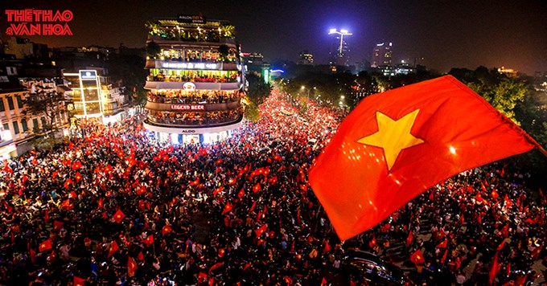
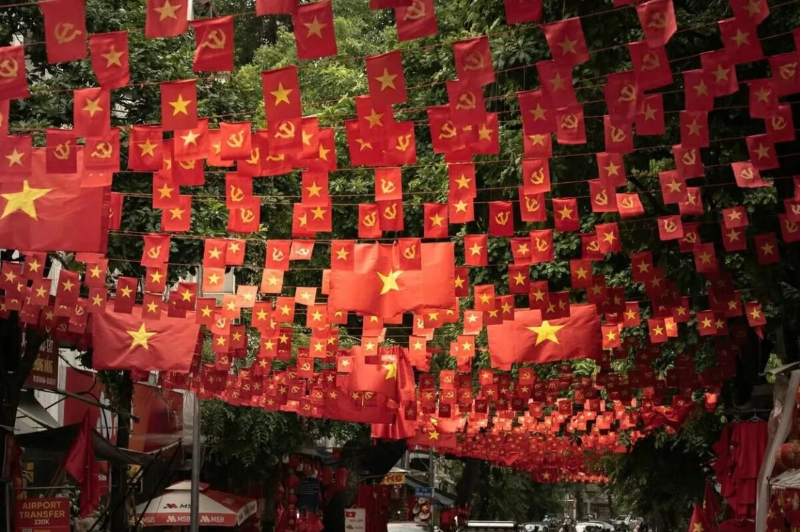

Plan Your Trip to Vietnam
Planning a first trip to Vietnam can feel exciting, but it can also be difficult because each region offers a different experience. This page is designed to give practical advice based on how I would usually help a friend prepare for their first visit. It focuses on useful travel tips, budgeting ideas, transportation options, and a simple trip preference form that could support more personalized travel guidance in the future.
Vietnam has become one of the most popular destinations in Southeast Asia because it offers a strong combination of culture, food, history, nature, and city life. At the same time, tourism infrastructure has continued to improve, making it easier for travelers to move between regions by plane, train, bus, and private transport. Understanding the basics before arriving can help visitors build a smoother and more enjoyable trip.
Travel Tips
One of the most important things to know is that Vietnam’s regions can feel very different depending on the time of year. The north usually has a cooler winter and a warmer summer, the center can be affected by rainy and storm seasons, and the south is more tropical with wet and dry periods. Because of that, travelers should think about season and region together instead of treating the whole country as having the same weather.
For first-time visitors, it is often better to create a flexible schedule instead of trying to do too much too quickly. Vietnam is long and geographically diverse, so traveling from north to south takes time. A better plan is to choose two or three main areas, spend enough time in each one, and leave room for rest, local food, and unexpected discoveries. It also helps to remember simple cultural habits such as dressing respectfully at religious sites, being polite in local spaces, and learning a few basic greetings.

Budget Advice
Vietnam can fit many different travel budgets. Budget travelers can often save money by staying in hostels or simple guesthouses, eating local food, and using buses or shared transportation. Mid-range travelers may prefer boutique hotels, domestic flights, and a mix of local food and restaurants, while higher-budget travelers might choose premium hotels, guided tours, and private transportation.
A practical way to plan a budget is to divide spending into four categories: accommodation, food, transportation, and activities. In many cases, food remains affordable even for travelers who want to eat well, while transportation costs can rise faster if the trip includes several domestic flights. Setting a daily spending target and leaving extra room for shopping, entrance tickets, or emergency costs is a smart way to stay prepared.
Transportation Ideas
Vietnam offers several transportation options depending on distance and travel style. Domestic flights are often the fastest choice for moving between major regions such as Hanoi, Da Nang, and Ho Chi Minh City. Trains are a good option for travelers who want to enjoy the scenery and experience a slower journey, especially on routes through the central coast. Buses can be cost-effective, while private cars or ride-hailing apps may be more convenient for short city travel.
Within cities, travelers often use taxis, ride-share services, or short walking routes depending on the area. In places such as Hanoi and Ho Chi Minh City, traffic can feel intense at first, so many visitors prefer ride-hailing apps instead of driving themselves. For rural destinations, islands, or mountain areas, it is often better to plan transportation ahead because travel may take longer and options may be more limited.

Email Link
If you would like to contact me directly, use this email link: Email Me
Your Personalized Trip
This sample form shows how the website could collect traveler information and offer more personalized suggestions in the future. It includes a few simple categories that help identify travel style, timing, and interests.
Contact Form
This contact form is included as a sample project feature. It uses action="#" as required and does not use mailto in the form action or any server-side processing.